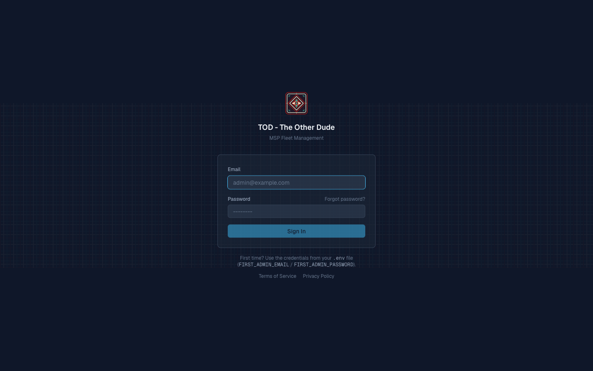
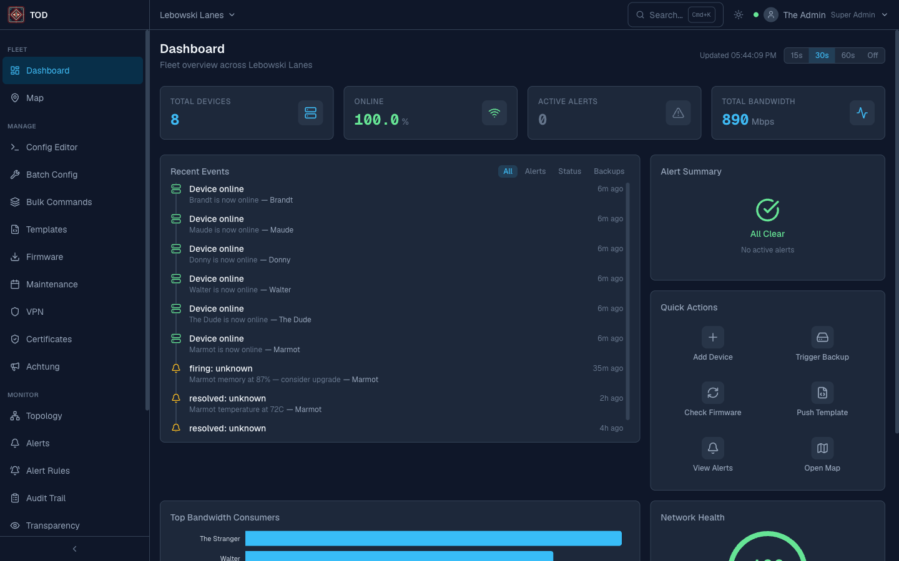
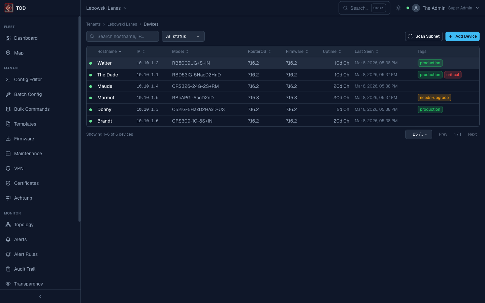
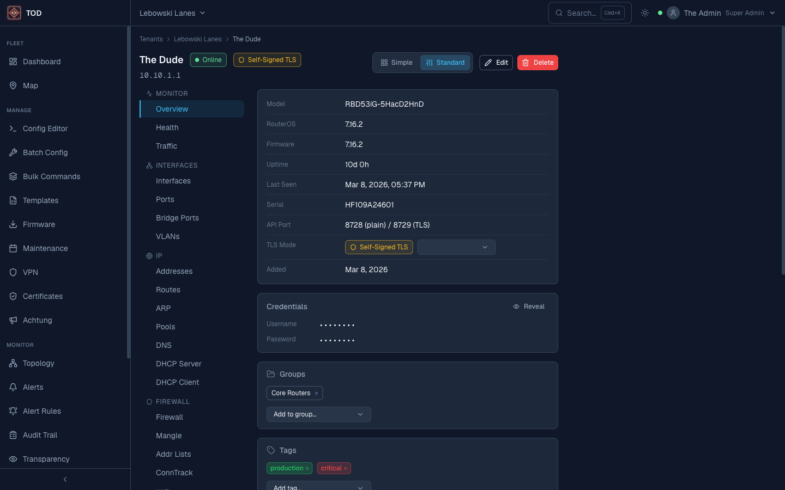
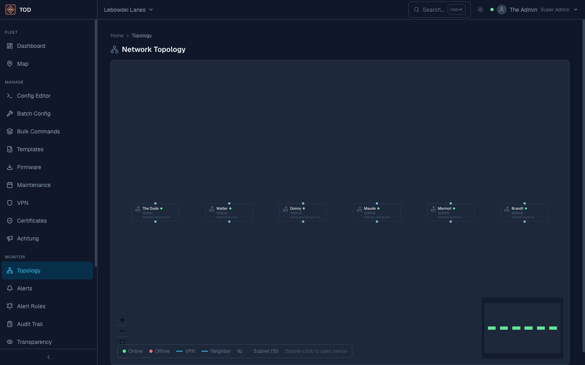
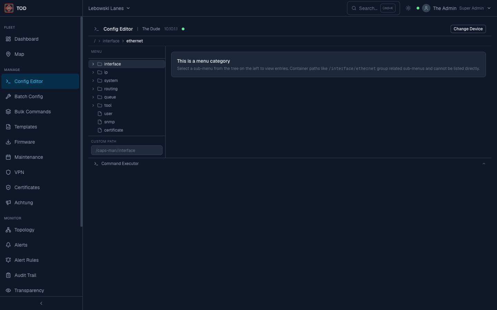
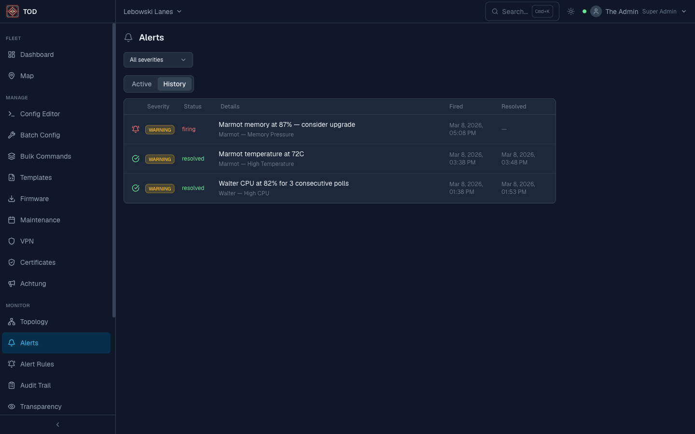
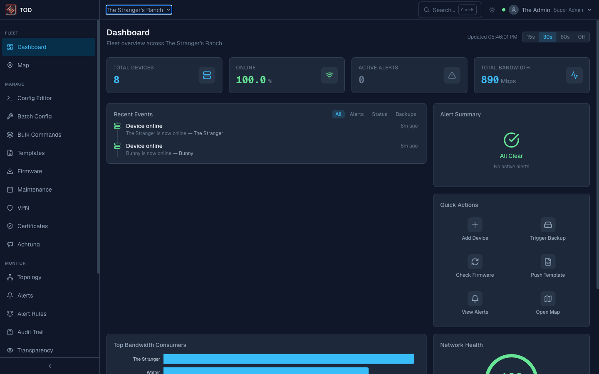

MikroTik Fleet Management for MSPs
Manage hundreds of MikroTik routers from a single pane of glass. Zero-knowledge security, real-time monitoring, and configuration management — built for MSPs who demand more than WinBox.
Everything you need to manage your fleet
From device discovery to firmware upgrades, The Other Dude gives you complete control over your MikroTik infrastructure.
Fleet Management
Dashboard with real-time status, virtual-scrolled fleet table, subnet scanning, and per-device detail pages with live metrics.
Configuration
Browse and edit RouterOS config in real-time. Two-phase push with panic-revert ensures you never brick a remote device. Batch templates for fleet-wide changes.
Monitoring
Real-time CPU, memory, and traffic via SSE. Threshold-based alerts with email, webhook, Slack, and webhook push notifications. Interactive topology map.
Zero-Knowledge Security
1Password-style SRP-6a auth — the server never sees your password. Per-tenant envelope encryption via OpenBao Transit. Internal CA for device TLS.
Multi-Tenant
PostgreSQL Row-Level Security isolates tenants at the database layer. RBAC with four roles. API keys for automation.
Operations
Firmware management, PDF reports, audit trail, maintenance windows, config backup with git-backed version history and diff.
Built for reliability at scale
- Three-service stack: React frontend, Python API, Go poller — each independently scalable
- PostgreSQL RLS enforces tenant isolation at the database layer, not the application layer
- NATS JetStream delivers real-time events from poller to frontend via SSE
- OpenBao Transit provides per-tenant envelope encryption for zero-knowledge credential storage
Modern tools, battle-tested foundations
See it in action








Up and running in minutes
# Clone and configure
cp .env.example .env
# Start infrastructure
docker compose up -d
# Build app images
docker compose build api && docker compose build poller && docker compose build frontend
# Launch
docker compose up -d
# Open TOD
open http://localhost:3000Ready to manage your fleet?
Get started in minutes. Self-hosted, open-source, and built for the MikroTik community.